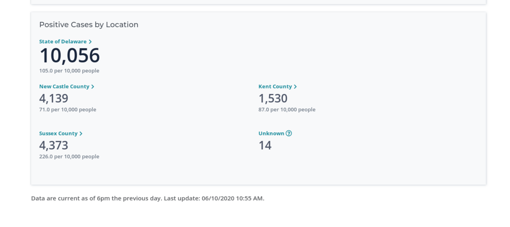
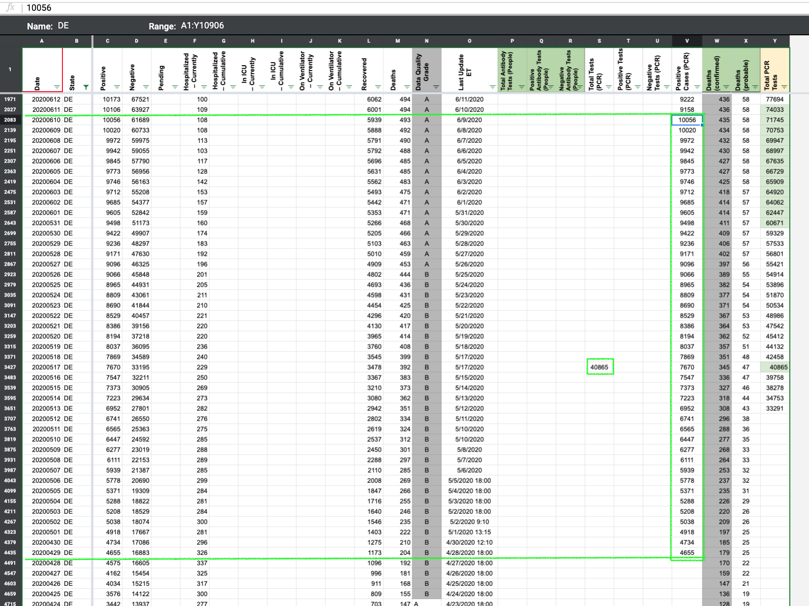
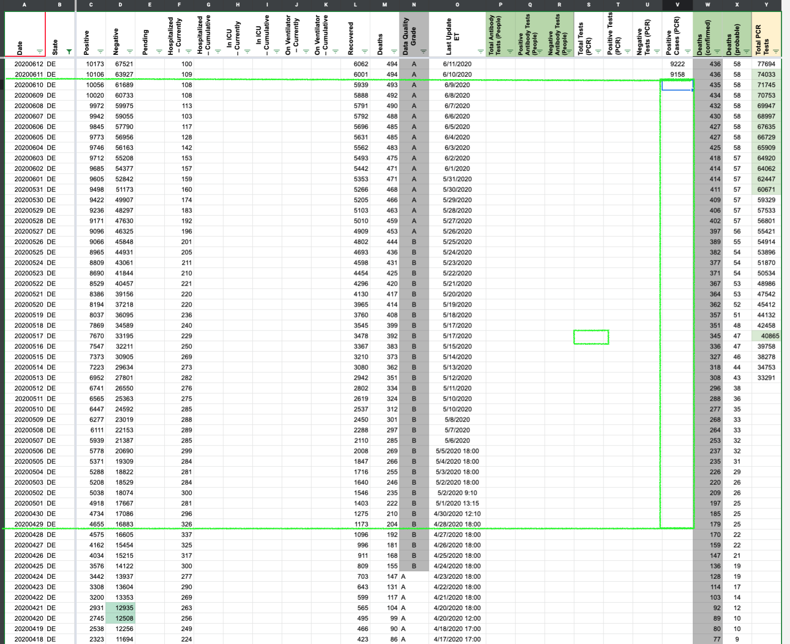

[DE] PCL Cases Historical
Issue number 622
the-daniel-lin opened this issue on July 14, 2020 at 9:17 am
Labels PCL/SVP Historicals
State or US: Delaware
Describe the problem From 4/28-6/9, we report confirmed+probable lumped values in “Positive Cases (PCR).” Delaware began separating the numbers on 6/10, which we have reflected in that same column. We should delete the lumped values prior to 6/10
Link to data source 
From 2020-04-29 through 2020-06-10 (inclusive), CTP reported the same value for positive and positiveCasesViral columns.
Separately, on 2020-06-11, Delaware reported 9,158 confirmed cases, 948 probable cases which is 10,106 total cases. This is reflected on 2020-06-11 in CTP’s dataset.
BEFORE 
AFTER 